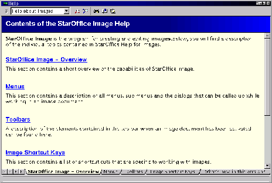
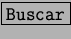
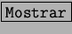
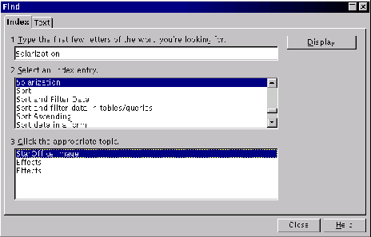
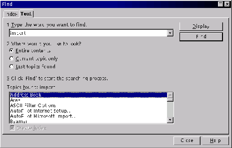
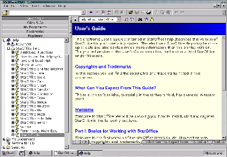

Next: El ayudante
Up: StarDesktop: El Entorno de
Previous: Los tooltips
Índice General
Para acceder al fichero general de ayuda de StarOffice basta elegir en
el menú [Ayuda] la opción Contenido. Esto abre una ventana con el
texto de la ayuda, que está en formato hipertexto, es decir, se puede
ir pulsando por los diversos vínculos que tiene para ir pasando de
página en página. Se puede navegar por las páginas hacia delante y
hacia atrás con los botones correspondientes de la barra de
funciones. Obsérvese que la ventana de ayuda tiene su propia barra de
objetos. Un ejemplo de esta ventana se ve en la figura
5.20.
Figura 5.20:
Ayuda en Línea
|

|
Cuando es necesario buscar algo en la ayuda se pulsa el botón
 en la ayuda, lo que abre el cuadro de diálogo
Buscar, con dos fichas que se ven en las figuras 5.22 y 5.21.
En la pestaña Indice se buscará una palabra, pero sólo en los títulos
de las partes de la ayuda; más potente es la pestaña Texto, que puede
buscar en toda la ayuda, aunque para ello debe crear índices, lo que
le lleva algún tiempo, cosa que indica con un aviso. Si se encuentra
el tema deseado, se pulsa el botón
 y así se vuelve a la ventana de ayuda. Otro modo de
consultar la ayuda consiste en abrir el Explorador de
StarOffice y usar la entrada Ayuda, como se ve en la figura
5.23.
Figura 5.21:
Busqueda de Ayuda por índice
|

|
Figura 5.22:
Busqueda de Ayuda por índice
|

|
Figura 5.23:
También se tiene mucha ayuda desde el Explorador
|

|
Next: El ayudante
Up: StarDesktop: El Entorno de
Previous: Los tooltips
Índice General
Proyecto Cursos - LuCAS - http://lucas.hispalinux.es/htmls/cursos.html